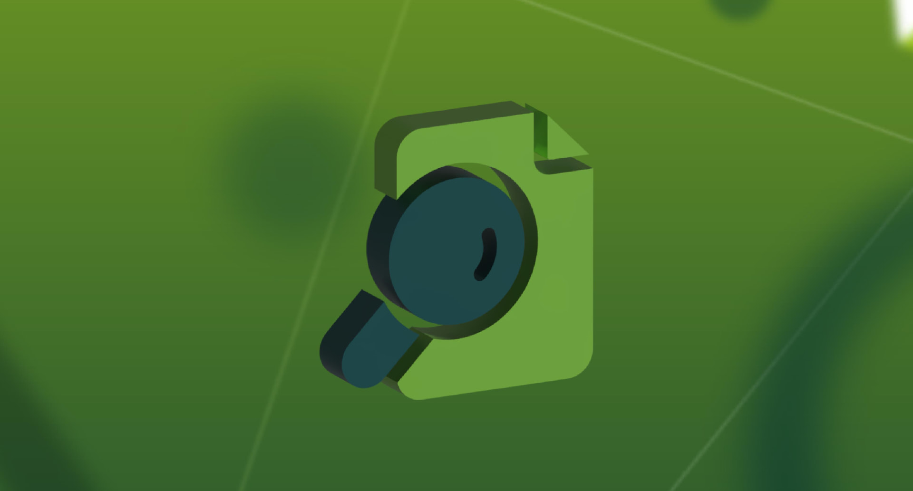
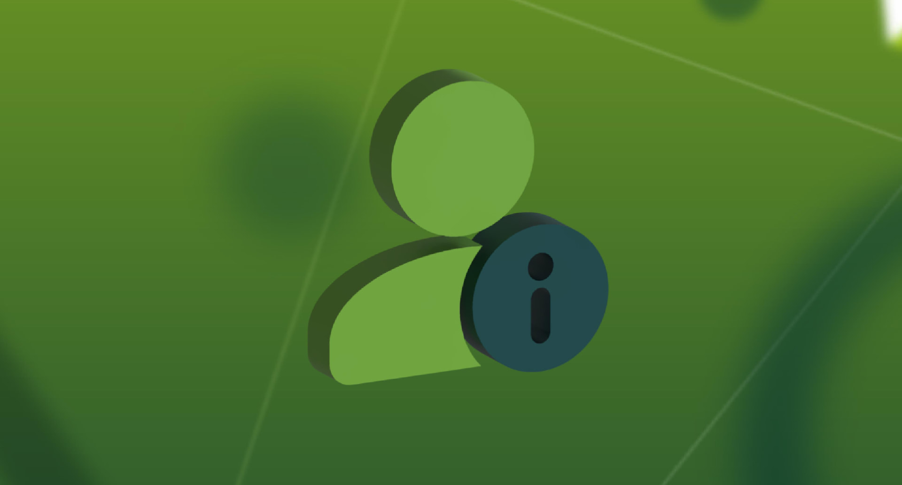
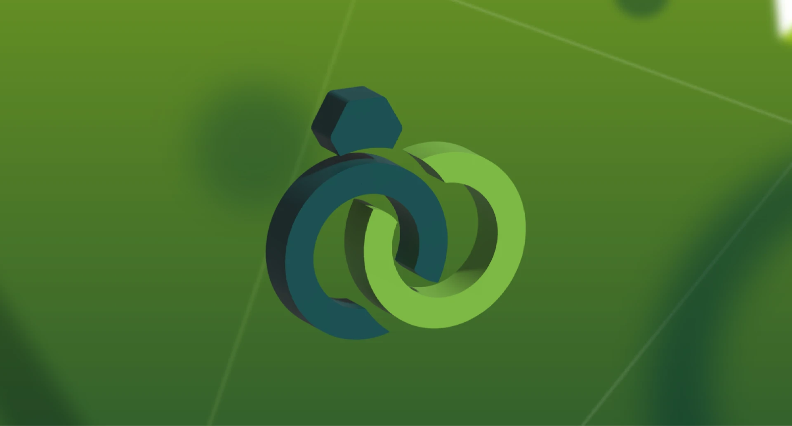

الأعباء الإدارية وتنوع المنصات الرقمية
بداية 01/09/2026
عرض التفاصيل
تحدي يركّز على تمكين الجمعيات من تطوير حلول مبتكرة لتعزيز الاستدامة المالية، وتنويع مصادر الدخل، ورفع قدرتها على التخطيط والتشغيل طويل المدى.
يستهدف هذا التحدي تطوير حلول عملية تساعد الجمعيات على تنويع مصادر دخلها، وتحسين كفاءة تدفق التمويل، ورفع جاهزيتها للاستدامة المالية بعيدًا عن الاعتماد على مصدر واحد أو موسمي.
كيف يمكن للجمعيات تعزيز استدامتها المالية بطرق مبتكرة وقابلة للتطبيق داخل بيئتها التشغيلية؟
تواجه كثير من الجمعيات صعوبة في بناء تدفق تمويل مستقر يوازن بين متطلبات التشغيل واستمرارية البرامج. يسعى هذا التحدي إلى استقطاب حلول مبتكرة تعالج الفجوة بين مصادر الدخل الحالية والاحتياج التشغيلي طويل المدى.
تعاني كثير من الجمعيات من الاعتماد على مصادر تمويل محدودة أو موسمية، مما يؤثر على استمرارية البرامج وقدرتها على التخطيط طويل المدى. تنعكس هذه المشكلة على جاهزية الجمعية للنمو، ورفع أثرها، وقياس نتائجها.
يرتبط هذا التحدي بأولوية القطاع غير الربحي في تعزيز الاستدامة، ويؤثر مباشرة على قدرة الجمعيات على تقديم خدماتها بكفاءة، ويمثّل رافعة أساسية لتوسيع الأثر والوصول إلى المستفيدين.
تحسين قدرة الجمعيات على إدارة مواردها بكفاءة أعلى.
تنويع مصادر التمويل وتقليل الاعتماد على مصدر واحد.
رفع موثوقية المشاريع أمام الداعمين والمانحين.
تعزيز الجاهزية للشراكات المؤسسية النوعية.
راجع كل أقسام التحدي والنطاق والمخرجات المتوقعة.
صمم نموذج الحل المقترح باختصار ووضوح.
ابدأ رحلة التقديم عبر نموذج المشاركة.
راجع البيانات، أرفق الملفات، ثم أرسل مشاركتك.
تابع مراحل التقييم من حسابك على المنصة.
شارك فكرتك أو نموذج الحل المقترح، وساهم في تحويل التحدي إلى مشروع قابل للتطبيق داخل الجمعيات.
المشاركة لا تستغرق سوى دقائق.


